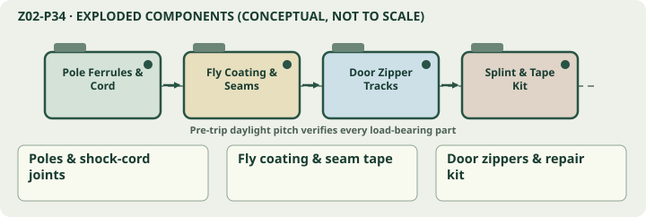

Z02-P34 · Shelter and housing · New manuscript
Inspect fabric coatings, seam tape, zippers and pole joints before use
Catch worn waterproofing, cracked shock-cord, bent ferrules and snagged zippers before field weather exposes them.
When it applies · Pre-trip inspection of stored tents, tarps, bivies and repair kits at home or before storm seasons.
Equipment · Shelter set, spare pole splint sleeve, seam-safe repair tape, spare cordage and clean dry test space.

Actions
- Pitch or lay out the shelter in daylight to inspect pole ferrules for hairline splits, check internal shock-cord elasticity and confirm all rainfly buckles and tie-outs are intact.[E20, T12]
- Check interior waterproof coatings and seam tape for stickiness, flaking, mildew odor or pinholes, and slide every door zipper gently to verify clean teeth alignment.[E20, T12, ED]
- Pack a compatible pole repair splint, fabric patch tape and spare guyline cord matched to the shelter before departure.[E20, E02, ED]
Failure recognition · Discovering peeling polyurethane floor coating and snapped pole shock-cord at dusk during a cold downpour.[E20, T12]
Verify · Confirm complete component count (body, fly, poles, stakes, guys, repair kit) and smooth zipper/pole operation prior to packing.[E20, T12, ED]
Stop or change course · Do not rely on a shelter with split pole ferrules, failed floor waterproofing or broken door zippers for wet or cold overnight travel.[E20, E05]
Evidence and editorial notes
- E02 · NPS · Ten Essentials (current web edition)
- Section: Navigation; insulation; emergency shelter; emergency food and water · Conditions: Outdoor trips; adjust kit to season and route
Support: Carry essential systems including navigation, insulation, light, water and emergency shelter.
Limitations: Carrying items without practice or cold-weather verification does not ensure readiness. · Conflicting evidence: None; baseline kit system architecture.
Editorial note: Supports failure-mode packing and kit verification cards. · Specialist reviewer: Field education and search and rescue
Primary source · checked 2026-11-24 - E05 · NWS · What To Do If You're Caught in a Winter Storm (current web edition)
- Section: Outside and find shelter · Conditions: Cold, wet or windy winter conditions
Support: Block wind, stay dry and keep off cold ground. Keep exposure reduction separate from making a fire.
Limitations: Improvised windbreaks do not provide rated thermal protection or snow-load capacity. · Conflicting evidence: None; aligns with CDC-H.
Editorial note: Separates wind, ground, and moisture heat-loss pathways. · Specialist reviewer: Cold-weather shelter specialist
Primary source · checked 2026-11-24 - E20 · NPS · Camping: What to Bring (current web edition)
- Section: Camping: What to Bring > Shelter and Sleep System · Conditions: Overnight camping across three-season and cool conditions
Support: Match tent/tarp, groundsheet, sleeping pad, and sleeping bag ratings to expected night lows and precipitation; test pitching and inspect poles, zippers, and stakes before departure.
Limitations: Manufacturer comfort ratings assume dry insulation, ground pad use, and adequate caloric intake. · Conflicting evidence: None; reinforces pre-trip inspection and dry-sleep separation.
Editorial note: Anchors manufactured shelter selection, groundsheet fit, and gear readiness. · Specialist reviewer: Shelter equipment and field education
Primary source · checked 2026-11-24 - T12 · FEMA / Ready.gov · Build a Kit (current web edition)
- Section: Build a Kit > Basic Disaster Supplies Kit and Maintenance · Conditions: Overnight and multi-day emergency readiness
Support: Assemble water, food, light, NOAA/battery radio, first aid, whistle, local maps, sanitation, medications, and backup power; inspect expiration dates and batteries regularly.
Limitations: Standard 72-hour kits do not cover extended multi-day isolation without replenishment or specialized cold/medical items. · Conflicting evidence: None; links kit readiness to periodic maintenance checks.
Editorial note: Supports equipment readiness, inspection, and overnight-emergency cards. · Specialist reviewer: Emergency management and field readiness
Primary source · checked 2026-11-24
Source lineage · NPS camping gear and Ready.gov kit maintenance; new manuscript · Classification · New manuscript.